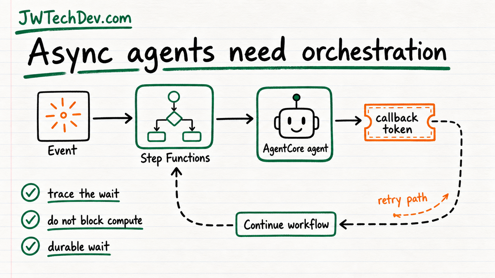

Async agent pipelines are cloud infrastructure, not chatbots
Once an agent enters a workflow, you need orchestration, callbacks, retries, and tracing.

Quick answer
Do not design every agent workflow like a chatbot request that has to finish immediately. Many real agent tasks need async orchestration so the workflow can wait, retry, resume, and keep context without wasting compute.
The chatbot trap
Chat makes agents feel synchronous. A user asks, a model answers, and the whole thing looks like one request.
Production work is different. An agent may need to call tools, wait on external systems, request approval, process a callback, or recover from a failed step. That belongs in workflow infrastructure, not a long-running function that sits there burning time.
The async pattern
The AWS ML Blog walks through patterns for calling AgentCore agents inside serverless pipelines. The big lesson is to separate the workflow from the wait.
Step Functions, task tokens, direct integrations, durable functions, queues, and callbacks help the system pause and resume without pretending every task is instant.
The operational details matter
Async workflows also make observability more important. You need a stable session ID, trace context, retry behavior, timeout handling, and a way to know where the work paused.
That is the difference between an agent demo and something a team can operate when it fails at 2:00 in the morning.
What builders should do
Map every agent workflow as steps before choosing services.
Mark which steps are instant, which wait, which require approval, and which may retry.
Use durable orchestration for waits instead of blocking compute.
Add tracing before the workflow gets complicated.
Bottom line
Async agent pipelines are where AI work starts looking like normal distributed systems work. That is a good thing. It means builders can use proven cloud patterns instead of hoping the model finishes everything in one clean request.
Sources checked
Want the starter kit?
Grab the free JWTechDev.com starter kit if you want a practical way to connect cloud basics, AI workflows, and approval gates.
Get resources